A / Applications
Where did these faces come from?

Scene 01 / 60 · reveal 2 / 2
ES 667 · Nipun Batra · IIT Gandhinagar
Applications, latent variables, VAEs and GANs
Full route · 120 minutes · 60 core scenes · same required topics · lab adds 45–60 minutes
Present lecture · Completed scenes PDF · All builds PDF · Practical lab · Two-page recap
A / Applications
Say: Look across the faces. What varies, and what still makes each one look plausible?
These faces come from a published generator. We want more than one convincing image: different random inputs should give us varied, plausible faces. Keep that requirement in mind when we reach GANs.
Reveal 1. Where could these portraits have come from?
Reveal 2. These are published generated faces. Change the random input and the face changes.
Ask: Would one convincing face be enough to show that a generator has learned the data distribution?
Answer: No. A model could repeat one face and still miss most of the variation in the data.
A / Applications
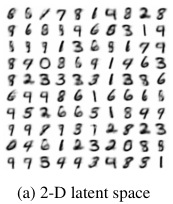
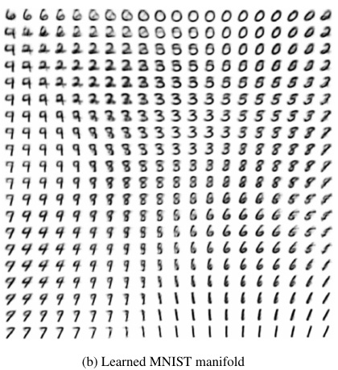
Say: Watch how the digit changes as we move across this hidden space.
The published VAE result gives us two ways to look at generation: individual samples and a decoded latent grid. The grid helps us inspect the decoder. It is not a collection of independent random draws from the prior.
Reveal 1. How could a model produce another digit after training?
Reveal 2. A decoded grid shows how the hidden coordinates change the digit.
Ask: Does the displayed grid consist of independent Gaussian draws?
Answer: No. Its coordinates are deliberately arranged at Gaussian quantiles so we can inspect the decoder.
Source: Kingma & Welling · AEVB
A / Applications
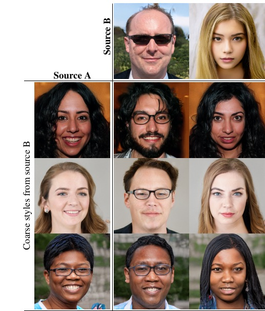
Published style mixing changes selected layer groups.
Say: Try to identify which features came from each source.
This StyleGAN example combines styles at different scales. In this crop, coarse styles come from source B and the other styles come from source A. This is a property of this model's architecture, not something every generator can do.
Reveal 1. Which properties of these two sources could be combined?
Reveal 2. Take coarse styles from B and the remaining styles from A: this is style mixing.
Ask: Does style mixing mean averaging the two source images pixel by pixel?
Answer: No. It changes the styles supplied to different parts of the generator.
A / Applications
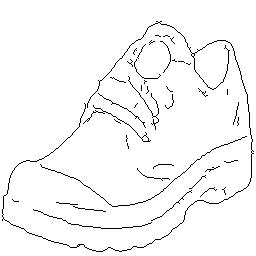
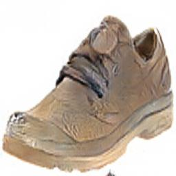
Say: The outline tells us the shape. It leaves the colour and material open.
An outline narrows the set of possible shoes without specifying every pixel. The output is a generated appearance; the separately labelled reference is an observed photograph. Matching the outline is only one part of producing a plausible shoe.
Reveal 1. An outline specifies shape. What does it leave unspecified?
Reveal 2. The model fills in the appearance. The photograph is a separate reference.
Ask: Could two different photographs both fit this outline?
Answer: Yes. The outline does not uniquely determine colour, texture, material or lighting.
A / Applications
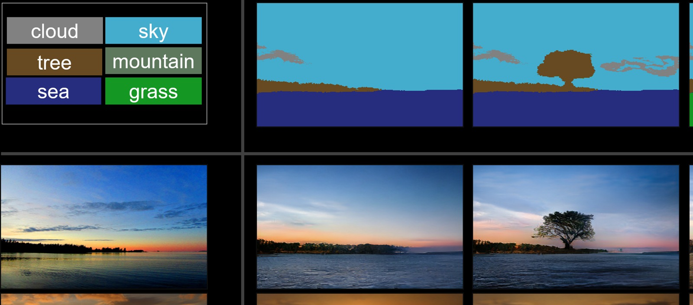
Say: The layout says what goes where. What still has to be invented?
The semantic map supplies spatial constraints, such as where the sky and vegetation belong. The generator supplies their visual appearance. The SPADE example lets us separate a condition from the image produced under that condition.
Reveal 1. The layout fixes where the regions belong.
Reveal 2. The layout constrains the scene; the generator supplies its appearance.
Ask: Does a semantic layout specify every output pixel?
Answer: No. It constrains regions and classes while leaving much of their appearance unspecified.
Source: Park et al. · SPADE
A / Applications
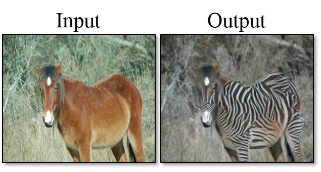
Say: We want the animal and scene to remain recognisable as the appearance changes.
The observed horse image is the input. The generated output has the appearance of the zebra domain. The example shows image translation; it is not evidence that the original scene contained a zebra.
Reveal 1. What should stay recognisable when the domain changes?
Reveal 2. The horse is an observed input. The zebra-domain image is a generated translation.
Ask: What should remain consistent through this translation?
Answer: The scene and animal structure should remain recognisable while the relevant appearance changes.
Source: Zhu et al. · CycleGAN
A / Applications
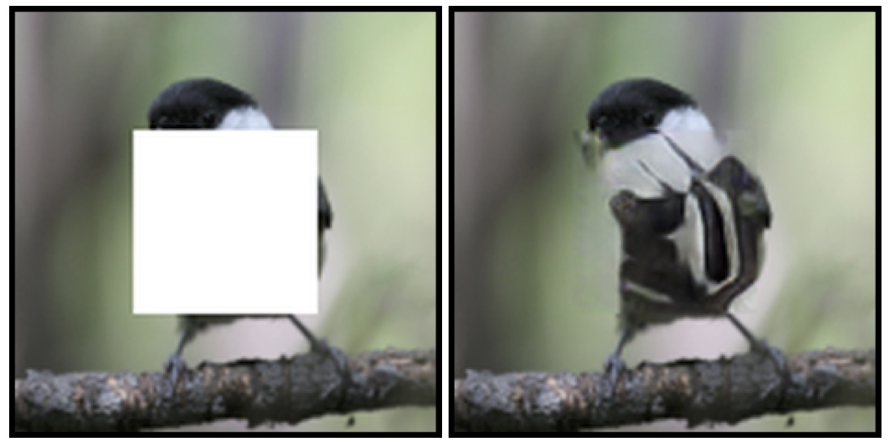
Say: More than one missing patch could fit the visible context.
The surrounding pixels constrain the missing region, but they may not determine it uniquely. A convincing completion can be useful even when it differs from the hidden original. Plausibility and recovery are separate claims.
Reveal 1. The visible context constrains the missing region. Does it determine every detail?
Reveal 2. A plausible completion is not proof of the hidden original.
Ask: Does a realistic completion prove that we recovered the original pixels?
Answer: No. Several completions can agree with the visible context.
A / Applications
Proposed lab application; illustrative signals. Deterministic equations, not recorded EEG.
Say: These traces illustrate the idea. They are not validated physiological recordings.
Here the condition describes a spindle-like event and the traces are deterministic teaching illustrations. A research model would need evaluation of signal properties and downstream usefulness. Generating a plausible-looking waveform would not establish either result.
Reveal 1. Proposed lab application; illustrative signals. Condition: a spindle-like event.
Reveal 2. Different traces can fit one event description. Scientific validity still needs testing.
Ask: What would we need to check before using generated signals in a study?
Answer: Whether they preserve the relevant signal and event properties, and whether the intended downstream use actually benefits.
A / Applications
Same caption: an electric substation in Finland
Published generated samples · fixed caption and other metadata · first method, first sample row
Say: Treat each output as a possible image under the metadata, not as a measurement.
DiffusionSat uses conditioning information to guide image generation. A generated image is not an observation of an unmeasured location or a guaranteed forecast. We return to the mechanics of diffusion in the next lecture.
Reveal 1. What does the metadata tell a satellite-image generator?
Reveal 2. These are generated possibilities, not recovered measurements or forecasts.
Ask: Can generated satellite imagery replace an actual measurement without further evidence?
Answer: No. A model-generated possibility does not establish what was observed on the ground.
Source: Khanna et al. · DiffusionSat
A / Applications
Recreated character bigram model fitted to 14 teaching names · start ^ · end $
P(a | ^) = 3/14 P(d | ^) = 2/14 P(r | ^) = 2/14
Seeds 667 and 668; categorical sampling, no temperature scaling.
Say: We have already seen this pattern: predict probabilities, then draw one outcome.
The small character model chooses a next character from a categorical distribution, then repeats with the growing prefix. It is a seeded bigram teaching model. A different seed can produce another name without changing the learned probabilities.
Reveal 1. Choose a next character from its categorical distribution.
Reveal 2. A new random seed gives another sequence from the same fitted model.
Ask: If we always chose the most likely character, what would we lose?
Answer: Much of the variation produced by sampling from the next-character distribution.
Source: Course name generator · reproduced categorical example
B / Distributions
Say: A generator needs a way to assign probabilities, draw samples, or both.
The gallery outputs look different, but each example concerns a distribution over possible outputs. A sample is one draw from that distribution. When we supply a condition, we ask for outputs that fit that condition.
Reveal 1. A sample is one outcome. The distribution describes possible outcomes.
Reveal 2. Learn a distribution from which we can draw new outputs.
Reveal 3. A condition narrows which outputs are plausible.
Ask: What is the difference between a distribution and a sample?
Answer: The distribution describes possible outcomes and their probabilities; a sample is one outcome drawn from it.
Source: ES 667 · original teaching diagrams and exact calculations
B / Distributions
Deterministic toy geometry, centres (−2,0), (2,0); these are not image-quality metrics.
Say: The average is in the middle. But almost none of our data live there.
For two separated clusters, the mean may be far from both. Producing that mean repeatedly would be poor generation. We need to inspect both whether samples look plausible and whether they cover the different regions of the data.
Reveal 1. The average falls between the two clusters.
Reveal 2. Good samples should look plausible and cover the data distribution.
Ask: Why can low squared error be a poor goal for this generator?
Answer: It can favour the mean between the modes, even though that point is not a plausible sample.
Source: ES 667 · original teaching diagrams and exact calculations
B / Distributions
Say: Fitting the parameters is straightforward. Choosing a suitable family is the harder question.
For a Gaussian, maximum likelihood gives the sample mean and a variance with denominator N. Those parameters are optimal within the Gaussian family. They do not make one Gaussian a good description of two separated clusters.
Reveal 1. Fit the centre to six observations.
Reveal 2. For maximum likelihood, divide the squared deviations by N.
Reveal 3. Even the best fit within one family can miss the shape of the data.
Ask: Would more accurate optimisation fix this single Gaussian's missing two-cluster structure?
Answer: No. The limitation here is the distribution family, not an optimisation error.
Source: ES 667 · original teaching diagrams and exact calculations
B / Distributions
Say: Think of two random choices: which cluster, then which point within it.
The hidden component label makes a mixture easy to sample. If we only observe the final point, we sum over the possible component choices to obtain its density. This small example introduces the role of a latent variable.
Reveal 1. First choose a component.
Reveal 2. Then draw from its Gaussian. Sum over the hidden choice.
Ask: Why is there a sum over z when we compute p(x)?
Answer: The component choice is unobserved, and each possible choice contributes to the marginal density.
Source: ES 667 · original teaching diagrams and exact calculations
B / Distributions
Recreated character bigram model fitted to 14 teaching names · start ^ · end $
P(a | ^) = 3/14 P(d | ^) = 2/14 P(r | ^) = 2/14
Seeds 667 and 668; categorical sampling, no temperature scaling.
Say: We can score a whole name by following exactly the choices used to generate it.
The chain rule writes a sequence probability as a product of conditional probabilities. Include the end token: it is the model's decision to stop. Our teaching bigram model uses only the previous character, although the general formula allows the full prefix.
Reveal 1. Every token has a probability given its preceding context.
Reveal 2. Multiply the next-token probabilities, including the probability of stopping.
Ask: Why does the end token belong in the sequence probability?
Answer: Stopping at that point is one of the events that defines the generated sequence.
Source: Course name generator · reproduced categorical example
B / Distributions
Say: During training we know the prefix. During generation we must build it ourselves.
An ordering lets us apply the same chain rule to image pixels. With a causal mask, training can score positions in parallel using the observed prefix. Sampling still needs the previously sampled pixels before it can continue.
Reveal 1. An image can be ordered into a pixel sequence.
Reveal 2. Training uses the observed prefix. A causal mask lets us score positions in parallel.
Reveal 3. Generation feeds each sampled pixel into the next prediction.
Ask: Why does parallel training not imply parallel ancestral sampling?
Answer: At generation time, later conditional distributions depend on earlier pixels that have not yet been sampled.
Source: Course name generator · reproduced categorical example
B / Distributions
Say: Imagine choosing the whole output through one random vector.
Instead of sampling one output coordinate at a time, we can transform a latent draw into an output. The map must be learned so that draws from the chosen prior produce useful outputs. A random input alone does not guarantee useful variation.
Reveal 1. Could a random vector select an entire output?
Reveal 2. Learn a map that turns latent draws into plausible outputs.
Ask: What has to be learned in this picture?
Answer: The mapping from latent draws to outputs, so that its output distribution matches the data.
Source: ES 667 · original teaching diagrams and exact calculations
B / Distributions
A density model over learned codes is one possible additional step.
Say: Reconstructing the training images does not tell us where to draw a new code.
An ordinary autoencoder can learn useful reconstructions while arranging its codes irregularly. Sampling from an arbitrary Gaussian may then land between the codes used during training. We need a generative model and a way to connect inference to its prior.
Reveal 1. An autoencoder learns to reconstruct its inputs.
Reveal 2. Reconstruction alone can leave irregularly arranged codes.
Reveal 3. Where should we draw a new code? Reconstruction alone has not answered that.
Ask: Why is a reconstruction network not automatically a complete sampling model?
Answer: Its reconstruction objective does not specify a suitable distribution over new latent codes.
Source: ES 667 · original teaching diagrams and exact calculations
C / KL
Say: Read KL as the extra surprise we incur by using Q when the outcomes follow P.
Both distributions refer to the same categories. We compare their log probabilities and average using P. That choice of weighting is part of the definition and will matter when we reverse the arguments.
Reveal 1. Two distributions assign different probabilities to the same categories.
Reveal 2. An unlikely observation is more surprising.
Reveal 3. Average the extra surprise, weighting each event by its probability under P.
Ask: Which distribution supplies the averaging weights in KL(P || Q)?
Answer: P supplies the weights; Q is the distribution whose predictions we compare with P.
Source: ES 667 · original teaching diagrams and exact calculations
C / KL
| category | Pᵢ | Qᵢ | log(Pᵢ / Qᵢ) | weighted contribution |
|---|---|---|---|---|
| 1 | 0.80 | 0.60 | 0.287682072 | 0.230145658 |
| 2 | 0.20 | 0.40 | -0.693147181 | -0.138629436 |
Say: Keep the negative term. It is the total, not each contribution, that must be nonnegative.
Work through the two category contributions separately, using natural logarithms. One contribution is negative because Q assigns less probability than P to the other category and more to this one. The weighted sum is still nonnegative.
Reveal 1. Category 1: weight the log ratio by its probability under P.
Reveal 2. Category 2 can make a negative contribution.
Reveal 3. Individual contributions can be negative. Their sum cannot.
Ask: Does a negative category contribution mean that our KL calculation is wrong?
Answer: No. Individual terms can be negative; the complete KL is nonnegative.
Source: ES 667 · original teaching diagrams and exact calculations
C / KL
Say: Swap the arguments first. Then try giving a possible event zero probability.
Reversing KL changes both the weights and the log ratios. If Q rules out an event that P can produce, observing that event has infinite surprisal under Q. The demonstration shows infinity explicitly rather than hiding it with a numerical clamp.
Reveal 1. Swap P and Q: the weights change as well as the log ratios.
Reveal 2. Matching distributions incur no extra surprisal.
Reveal 3. A possible event given zero model probability has infinite cost.
Ask: When is KL(P || Q) infinite in this finite example?
Answer: When some event has positive probability under P and zero probability under Q.
Source: ES 667 · original teaching diagrams and exact calculations
C / KL
Say: With the data distribution fixed, entropy is a constant in the training objective.
Cross-entropy includes the uncertainty already present in P, plus the extra cost of using Q. Subtracting the fixed entropy leaves KL. This explains why minimising cross-entropy can be understood as matching distributions.
Reveal 1. Entropy is the uncertainty in P. Cross-entropy uses Q to describe it.
Reveal 2. With P fixed, minimising cross-entropy also minimises KL.
Ask: Why can we minimise cross-entropy without explicitly subtracting H(P)?
Answer: H(P) is constant with respect to the parameters of Q.
Source: ES 667 · original teaching diagrams and exact calculations
C / KL
Prior: N(0,1) · approximate posterior: N(μ, σ²)
Say: Now the latent can take any real value, so the sum becomes an integral.
The same log-ratio idea applies to densities. In the VAE loss we compare the encoder's distribution for one observation with the prior. Keep the dependence on x visible: different observations can produce different encoder distributions.
Reveal 1. For a continuous latent, sum becomes integral.
Reveal 2. The encoder gives a distribution for this x. The prior does not depend on x.
Ask: Which distribution here changes when we replace the observed image?
Answer: The approximate posterior q(z | x) changes with x; the chosen prior p(z) does not.
Source: Kingma & Welling · AEVB
D / ELBO
Say: Tell the sampling story in order: draw z, decode its parameters, then draw x.
The generative model starts with the prior and a decoder likelihood. The encoder has no role in this sampling story. We introduce it later because learning from observed images requires reasoning about their hidden latents.
Reveal 1. Begin with a prior. No observed image or encoder is needed.
Reveal 2. Decode probabilities first, then sample the observation.
Ask: Do we need an input image to draw a new sample from this model?
Answer: No. Draw from the prior and then from the decoder likelihood.
Source: Kingma & Welling · AEVB
D / ELBO
Say: To score one image, we must account for all the latent values that could explain it.
The marginal likelihood integrates the joint density over z. The nonlinear decoder makes this integral difficult to compute exactly. Sampling a plausible image can therefore be easier than evaluating its exact marginal likelihood.
Reveal 1. Every latent that could explain this image contributes to its probability.
Reveal 2. With a nonlinear decoder, this integral is usually hard to compute exactly.
Ask: Why can we not score an image using only its single best latent?
Answer: The marginal probability includes contributions from all possible latent values, not just the best one.
Source: Kingma & Welling · AEVB
D / ELBO
Say: The true posterior asks which latents could have produced the image we observed.
Bayes' rule defines the true posterior, but its denominator is the difficult marginal likelihood. We introduce q as a tractable approximation. The encoder predicts that approximation; it does not directly return the exact posterior.
Reveal 1. After observing x, which latent values explain it?
Reveal 2. Use a tractable encoder distribution to approximate the true posterior.
Ask: Why do we introduce q if Bayes' rule already defines the posterior?
Answer: The definition does not make the posterior tractable to evaluate or sample from.
Source: Kingma & Welling · AEVB
D / ELBO
Concave log: log E[R] ≥ E[log R]. This is the first inequality.
Say: Follow the equality signs. Jensen's inequality is the one step that introduces a bound.
Start with the marginal likelihood. Multiply and divide by a normalised q that covers the required support, recognise an expectation, and then use the concavity of log. The first three lines are equalities; the last gives a lower bound.
Reveal 1. Start with the marginal probability of the observation.
Reveal 2. Multiply and divide by q. It must be normalised and cover the required support.
Reveal 3. The integral is now an expectation under q.
Reveal 4. Move log inside the expectation using Jensen. This is the first inequality.
Ask: Which step loses equality, and why?
Answer: Moving log inside the expectation uses Jensen's inequality for the concave logarithm.
Source: Kingma & Welling · AEVB
D / ELBO
Say: The bound rewards explaining the image and subtracts a KL to the prior.
Factor the joint into likelihood and prior, then split the logarithm. The resulting bound has an expected reconstruction log likelihood and a prior KL. Maximising the bound is equivalent to minimising its negative.
Reveal 1. Factor the joint and separate the logarithms.
Reveal 2. The bound is expected reconstruction log likelihood minus a KL to the prior.
Reveal 3. Maximise the evidence lower bound, or minimise its negative.
Ask: Why does the practical loss add KL even though the bound subtracts it?
Answer: The training loss is the negative of the ELBO.
Source: Kingma & Welling · AEVB
D / ELBO
Say: There are two KLs in this story. Check which distribution is on the right each time.
The gap to log evidence is KL from q to the true posterior. That is different from the KL to the prior inside the ELBO. The bound becomes tight when q agrees with the true posterior almost everywhere.
Reveal 1. Expand the KL to the true posterior using Bayes’ rule.
Reveal 2. The gap is a posterior KL, not the KL to the prior.
Reveal 3. The gap closes when q matches the true posterior almost everywhere.
Ask: Does making q equal to the prior necessarily close the evidence gap?
Answer: No. The gap closes when q equals the true posterior for the observed x.
Source: Kingma & Welling · AEVB
D / ELBO
| E_q log p(x|z) | -0.777661 |
| KL(q ∥ prior) | 0.020136 |
| ELBO | -0.797797 |
| KL(q ∥ posterior) | 0.104650 |
| log evidence | -0.693147 |
Say: Move q while watching the evidence stay fixed and the bound move below it.
This finite model has only two latent states, so we can calculate the evidence and posterior exactly. Changing q changes the bound and the posterior gap, not the fixed model's evidence. Their sum provides a direct numerical check of the identity.
Reveal 1. Two latent states let us compute evidence and posterior exactly.
Reveal 2. Move q. The bound changes; the fixed model evidence does not.
Ask: Where should q be set to make the bound tight?
Answer: At the exact posterior of this finite model.
Source: Kingma & Welling · AEVB
D / ELBO
Say: Before using a symbol, say what is conditioned on and what it describes.
Separate the prior, true posterior, approximate posterior and decoder likelihood. Then distinguish the exact ELBO from its Monte Carlo estimate. An individual estimate can lie above log evidence without invalidating the bound on the exact expectation.
Reveal 1. Which distribution belongs at each point in the model?
Reveal 2. The exact ELBO is a bound. One Monte Carlo estimate can sit above log evidence.
Ask: If one Monte Carlo ELBO estimate exceeds log evidence, has Jensen's inequality failed?
Answer: No. Jensen bounds the exact expectation, not every random estimate of it.
Source: Kingma & Welling · AEVB
E / Gradients
Say: We need the loss to tell the encoder how to move its sampling distribution.
The encoder changes the distribution from which z is drawn. An opaque random-sampling operation does not expose the pathwise derivative that ordinary backpropagation needs. Reparameterisation rewrites that same draw using explicit differentiable operations.
Reveal 1. The encoder controls the sampling distribution. We need its expected-loss gradient.
Reveal 2. An opaque random draw hides the path needed for ordinary backpropagation.
Ask: What gradient is missing from the opaque sampling picture?
Answer: The path from the sampled loss back to the parameters that determine the latent distribution.
Source: Kingma & Welling · AEVB
E / Gradients
ε stays fixed when parameters change.
Say: Keep the noise draw fixed. Stretch it, then shift it.
A standard Gaussian draw becomes a draw from the desired Gaussian after scaling and shifting. The randomness now enters through epsilon, whose distribution does not depend on the encoder parameters. The resulting z still has exactly the intended distribution.
Reveal 1. Draw noise from a fixed, parameter-independent distribution.
Reveal 2. Stretch the same noise draw.
Reveal 3. Shift the scaled noise. The result has exactly the Gaussian distribution we wanted.
Ask: Does reparameterisation replace the Gaussian sample with an approximation?
Answer: No. The affine transformation has exactly the required Gaussian distribution.
Source: Kingma & Welling · AEVB
E / Gradients
ε stays fixed when parameters change. Readouts use f(z) = z² and refer to this one draw.
Say: For this derivative, epsilon is a fixed input, just like any other number in the graph.
The rewrite places the expectation over parameter-independent noise. For one fixed draw, differentiate z with respect to mean and scale, then apply the chain rule through the loss. Averaging such sample gradients estimates the expected gradient under the usual differentiation conditions.
Reveal 1. Move the expectation to parameter-independent noise.
Reveal 2. For this draw, hold epsilon fixed and differentiate.
Reveal 3. Apply the chain rule to each draw; average draws to estimate the expected gradient.
Ask: Why must we hold epsilon fixed when differentiating a sample path?
Answer: We are differentiating the same deterministic computation with respect to its parameters, not comparing two unrelated draws.
Source: Kingma & Welling · AEVB
E / Gradients
ε stays fixed when parameters change. Readouts use f(z) = z² and refer to this one draw.
Say: Use the same epsilon on both sides of the finite-difference check.
The chosen mean, scale and noise give one concrete latent and loss. We compare analytic derivatives with finite differences of that same computation. Resampling between the two evaluations would mix random variation into the gradient check.
Reveal 1. A fixed draw gives a concrete sample and loss.
Reveal 2. Use the same epsilon when checking the derivatives with finite differences.
Ask: Why is the log-variance derivative different from the standard-deviation derivative?
Answer: Standard deviation is exp(logvar / 2), so the chain rule contributes a factor of standard deviation divided by two.
Source: Kingma & Welling · AEVB
E / Gradients
std = torch.exp(0.5 * logvar) eps = torch.randn_like(std) z = mu + std * eps
Say: Log variance is a convenient network output. It is not the scale used to multiply epsilon.
Convert log variance to standard deviation with exp(logvar / 2). Draw epsilon with the same shape and combine the tensors elementwise. This keeps one latent vector per example throughout the computation.
Reveal 1. The encoder predicts log variance. Convert it to standard deviation before sampling.
Reveal 2. All five tensors have the same shape.
Ask: What goes wrong if we use exp(logvar) as the sampling scale?
Answer: That gives the variance rather than the standard deviation, changing the sampled distribution.
Source: Kingma & Welling · AEVB
F / VAE
Say: Trace one batch through the diagram and check the width at each arrow.
Flatten each 28 by 28 image to 784 values. The encoder produces separate two-dimensional mean and log-variance vectors. The decoder returns 784 logits, which become Bernoulli probabilities after sigmoid.
Reveal 1. Flatten each image, then compute a hidden representation.
Reveal 2. Two heads give a mean and a log variance for each image.
Reveal 3. The decoder returns logits. Sigmoid turns them into pixel probabilities.
Ask: Why does the encoder need two output heads?
Answer: It predicts the mean and log variance of each example's approximate posterior.
Source: Kingma & Welling · AEVB
F / VAE
Say: Choose the observation model first. The reconstruction loss follows from that choice.
For binary pixels, a product of Bernoulli likelihoods gives a summed binary cross-entropy loss. A fixed-variance Gaussian observation model instead gives squared error plus constants. These are modelling choices, not interchangeable names for reconstruction quality.
Reveal 1. Once z is given, the model assigns each binary pixel a Bernoulli probability.
Reveal 2. Negative log likelihood is BCE summed over pixels.
Reveal 3. Fixed-variance Gaussian observations instead give squared error plus constants.
Ask: Why do we sum BCE over pixels before averaging over examples?
Answer: The observation likelihood is a product over pixels, so its negative log is a sum for each example.
Source: Kingma & Welling · AEVB
F / VAE
Prior: N(0,1) · approximate posterior: N(μ, σ²)
Say: Try mean zero and variance one. The posterior then matches the standard normal prior.
The Gaussian KL has a closed form, so this part of the VAE loss needs no Monte Carlo estimate. For a diagonal posterior, add the contribution of each coordinate. The expression reaches zero at mean zero and variance one.
Reveal 1. For one Gaussian coordinate, the KL is analytic.
Reveal 2. Add the KL contributions from the independent latent coordinates.
Reveal 3. At mean zero and variance one, each contribution is zero.
Ask: Which part of our VAE objective is analytic for a diagonal Gaussian posterior?
Answer: The KL to the standard normal prior.
Source: Kingma & Welling · AEVB
F / VAE
| Reconstruction NLL | 0.575364145 |
| KL coordinate 1 | 0.818147181 |
| KL coordinate 2 | 0.500000000 |
| Total Gaussian KL | 1.318147181 |
| One-sample −ELBO | 1.893511325 |
Specified two-pixel decoder output π = [0.75, 0.25]. This is not the 784-pixel model.
Say: Keep the two calculations separate: sampled reconstruction cost, then exact latent KL.
This two-pixel example makes the reductions visible. We sample z, evaluate the specified Bernoulli probabilities at that z, and sum the two negative log probabilities. Adding the analytic Gaussian KL gives one estimate of the negative ELBO.
Reveal 1. A temporary two-pixel example: sample the latent first.
Reveal 2. At this z, the specified decoder probabilities are (0.75, 0.25).
Reveal 3. Add the exact Gaussian KL to this draw's reconstruction cost.
Ask: Which part of this total changes if we draw a different epsilon with the encoder fixed?
Answer: The sampled reconstruction term can change; the analytic KL stays fixed.
Source: Kingma & Welling · AEVB
F / VAE
logits, mu, logvar = model(x)
# encoder → sample → decoder
recon = BCE_logits(logits, x.flatten(1),
reduction="none").sum(1)
kl = 0.5 * (mu.square() + logvar.exp()
- 1 - logvar).sum(1)
optimizer.zero_grad(set_to_none=True)
loss = (recon + kl).mean()
loss.backward()
optimizer.step()Update both φ and θ
For each example:
sum pixels → add latent KL
Across the batch:
mean → backpropagate → step
BCE_logits = binary_cross_entropy_with_logits · Complete runnable models
Say: Build one loss per example before taking the batch mean.
Encoding, sampling and decoding form one connected computation graph. Sum reconstruction costs over pixels and KL contributions over latent coordinates for each example. Average the per-example totals, then update both networks.
Reveal 1. Encode, sample, decode. The graph joins both networks.
Reveal 2. For each image, sum over pixels and over latent coordinates separately.
Reveal 3. Average per-example totals, then update encoder and decoder.
Ask: What happens if we average reconstruction over pixels but sum the latent KL?
Answer: We change their relative weighting and no longer implement the stated negative ELBO.
Source: Kingma & Welling · AEVB
F / VAE
Prior draw → decoder only
![Latent coordinate plane; use z sliders]()
Recorded training run · procedural binary glyphs
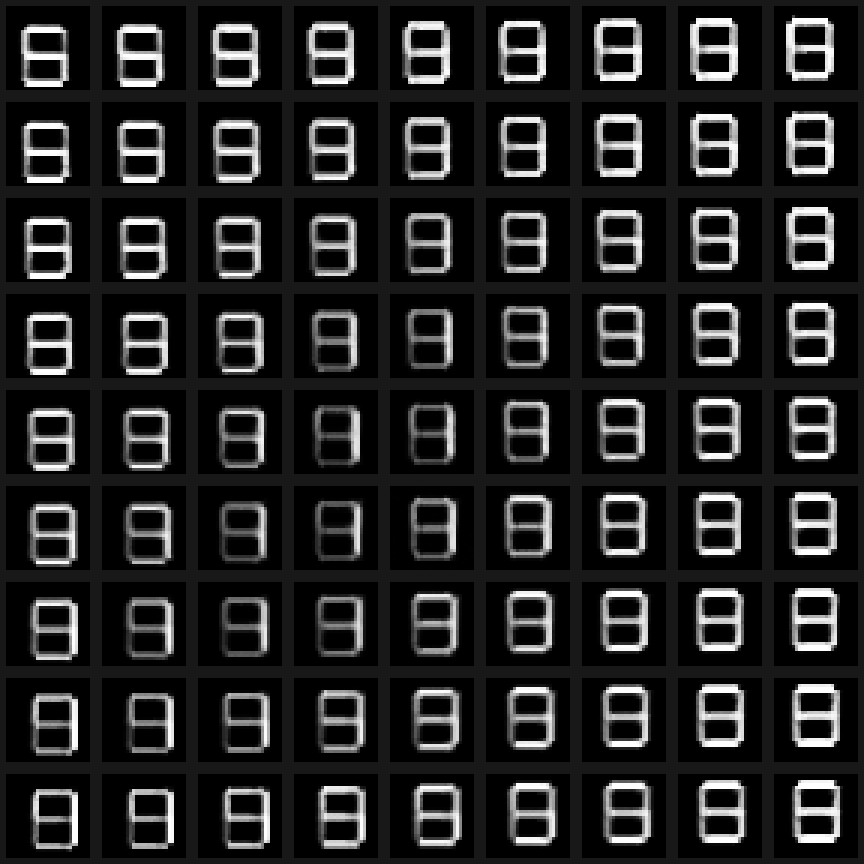
Say: Cover the encoder in the diagram. We can still generate from the prior.
Reconstruction uses an observed image to obtain q and then decode a latent from it. Fresh generation starts at the prior and bypasses the encoder. Displayed decoder probabilities and sampled binary pixels are two different views of the output.
Reveal 1. Reconstruction starts with an observed image and its encoded posterior.
Reveal 2. Fresh generation starts at the prior and skips the encoder.
Ask: Why is the encoder useful during learning but unnecessary for fresh generation?
Answer: It approximates latent inference for observed data; the generative model already specifies the prior and decoder.
Source: Kingma & Welling · AEVB
F / VAE
Select z → fixed trained decoder
Recorded training run · procedural binary glyphs
Say: The decoder stays fixed. Only the two latent coordinates move.
The browser evaluates the exported trained decoder at the selected point. The encoded held-out examples help us see where this model places observations. A regular coordinate grid helps exploration, but it does not have the same distribution as Gaussian prior draws.
Reveal 1. Move through z while keeping the trained decoder fixed.
Reveal 2. A regular grid helps us inspect the decoder. It is not a batch of prior draws.
Ask: Does a uniform sweep over the square show how often the prior visits each region?
Answer: No. The prior is Gaussian, so it weights locations differently from a uniform sweep.
Source: Kingma & Welling · AEVB
F / VAE
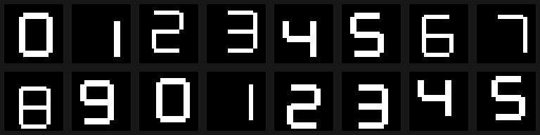
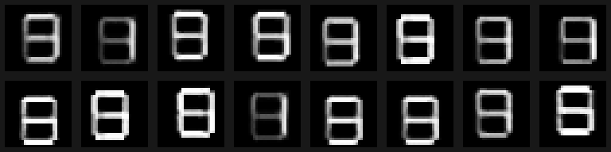
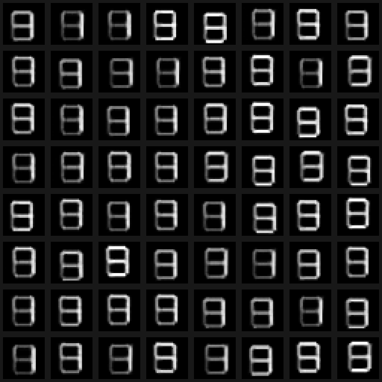
One actual β = 1 run. Failure modes discussed here are possibilities, not fabricated retrained comparisons.
Say: Look at what this run actually learned. The objective does not promise sharp or meaningful coordinates.
The displayed glyph results come from the recorded beta-equals-one VAE run. Its reconstructions and samples show the limits of this small model. We have not run a beta sweep, and the objective alone does not guarantee interpretable latent directions.
Reveal 1. The objective balances explaining x and keeping q near the prior.
Reveal 2. The objective does not guarantee sharp samples or interpretable latent coordinates.
Ask: Does a small training loss guarantee sharp samples and disentangled latents?
Answer: No. Neither property is guaranteed by the vanilla VAE objective.
Source: Kingma & Welling · AEVB
G / GAN
Blue: real data · teal outlines: current G samples · recorded training run
Say: This time we learn a critic of the samples as well as the generator.
The generator maps noise to fake examples. The discriminator learns to distinguish those examples from real data, supplying a training signal to the generator. We will make the two update phases explicit before running them.
Reveal 1. A generator makes fake samples. Compare them with real data.
Reveal 2. Train a classifier to recognise the source.
Ask: Where does the generator's training signal come from in this setup?
Answer: From the discriminator's response to generated examples.
Source: Goodfellow et al. · GANs
G / GAN
Say: Both paths end at the same discriminator with the same parameters.
Real and generated images enter one discriminator. Its output is a logit; sigmoid turns that logit into a source-classification probability. The generator output must have the same data dimensions as the real examples.
Reveal 1. The generator maps noise into the data space.
Reveal 2. Real examples enter a discriminator that outputs logits.
Reveal 3. Both real and generated images go through the same discriminator.
Ask: Do real and fake examples use two different discriminators?
Answer: No. The same discriminator processes both sources.
Source: Goodfellow et al. · GANs
G / GAN
Say: In the discriminator's task, real means one and generated means zero.
The discriminator loss is the sum of the mean real-example BCE and the mean fake-example BCE. These labels describe source, not image class. We use logits for numerically stable binary cross-entropy.
Reveal 1. Real examples have target 1.
Reveal 2. Generated examples have target 0.
Reveal 3. The discriminator loss adds the two batch means.
Ask: What do labels zero and one mean in this GAN loss?
Answer: They identify generated and real sources for the discriminator's binary task.
Source: Goodfellow et al. · GANs
G / GAN
opt_D.zero_grad(set_to_none=True) opt_G.zero_grad(set_to_none=True) fake = G(torch.randn(B, 32)) real_logits = D(real) fake_logits = D(fake.detach()) loss_D = BCE_logits(real_logits, ones) loss_D += BCE_logits(fake_logits, zeros) loss_D.backward() opt_D.step() # G has no new gradients
BCE_logits = binary_cross_entropy_with_logits · Complete runnable models
Say: Detaching keeps the fake values but cuts the path back to the generator.
During the discriminator phase, fake images are inputs to D rather than a route for updating G. Detach them, compute both source losses, and step only the discriminator optimiser. Clearing gradients makes the measured phase boundaries easier to check.
Reveal 1. Clear gradients and generate a fake batch.
Reveal 2. Detach the fake batch: keep its values, cut its connection to G.
Reveal 3. Step D's optimiser. G receives no new gradient in this phase.
Ask: Does detach alter the generated image values?
Answer: No. It removes the autograd connection to the generator for this use of the tensor.
Source: Goodfellow et al. · GANs
G / GAN
D.requires_grad_(False) opt_G.zero_grad(set_to_none=True) fake = G(torch.randn(B, 32)) fake_logits = D(fake) loss_G = BCE_logits(fake_logits, ones) # no detach; no no_grad around D loss_G.backward() opt_G.step() D.requires_grad_(True)
BCE_logits = binary_cross_entropy_with_logits · Complete runnable models
Say: Frozen parameters do not mean a frozen function. We still differentiate D with respect to its input.
Start a fresh forward pass after the discriminator update. Freeze D's parameters but keep the path from its output through the fake image to G. Target one encourages G to produce examples that D treats as real.
Reveal 1. Use a fresh forward pass through the updated discriminator.
Reveal 2. Freeze D's parameters while keeping the derivative with respect to its input.
Reveal 3. Use target 1 to update G. D's parameter values stay fixed.
Ask: Why must we not put this discriminator forward pass inside no_grad?
Answer: That would remove the input-gradient path needed to train G.
Source: Goodfellow et al. · GANs
G / GAN
Say: The minimax game explains the idea. Our code uses the non-saturating generator loss.
The original generator minimises the fake part of the minimax value. In practice, the non-saturating objective gives a stronger logit-level gradient when D confidently rejects fake samples. We should name the objective the code actually implements.
Reveal 1. The original game asks G to minimise what D maximises.
Reveal 2. Our code uses the non-saturating generator loss, which gives different gradients.
Ask: Are the minimax and non-saturating generator losses the same formula?
Answer: No. They provide different training gradients, though both encourage generated samples to be accepted as real.
Source: Goodfellow et al. · GANs
G / GAN
Say: At D equal to 0.01, compare the two slopes before following the rest of the graph.
The minimax slope with respect to the discriminator logit is minus D; the non-saturating slope is D minus one. At D equal to 0.01 these are minus 0.01 and minus 0.99. The full parameter gradient still depends on the discriminator and generator Jacobians.
Reveal 1. When D confidently rejects a fake, the minimax logit gradient becomes small.
Reveal 2. At small D, the non-saturating loss still has a strong logit gradient.
Reveal 3. At D = 0.01, compare −0.01 with −0.99. Continue the chain rule through G.
Ask: Does a strong logit-level slope guarantee a useful full generator gradient?
Answer: No. The remaining derivatives through D and G also matter.
Source: Goodfellow et al. · GANs
G / GAN
D parameters stay fixed; its input derivative remains part of G’s graph.
Say: After each phase, check which parameter values changed and which stayed fixed.
The first phase trains D using detached fake images. The second uses a fresh graph to train G through D with D's parameters frozen. Restore D's parameter gradients before the next iteration; the recorded deltas make the separation visible.
Reveal 1. D phase: detached fake, targets 1 and 0, update D.
Reveal 2. G phase: fresh graph, D frozen, target 1, update G.
Reveal 3. After G's update, enable D's parameter gradients for the next iteration.
Ask: Why do we need a fresh forward pass for the generator phase?
Answer: D has just changed, and G needs a current, connected computation graph through that updated discriminator.
Source: Goodfellow et al. · GANs
G / GAN
Say: The first dimension counts examples. It should survive every layer unchanged.
For a batch of 64, each noise vector has 32 coordinates and each image has 784 pixels. Hidden-layer widths change the feature dimension, not the batch dimension. Targets must have the same shape as discriminator logits to avoid unintended broadcasting.
Reveal 1. Noise dimension, batch size and pixel dimension have different roles.
Reveal 2. Reshape for viewing. D still receives flattened pixels.
Reveal 3. Targets must match logits exactly.
Ask: What shape should the real/fake targets have when logits have shape [64, 1]?
Answer: The targets should also have shape [64, 1].
Source: Goodfellow et al. · GANs
G / GAN
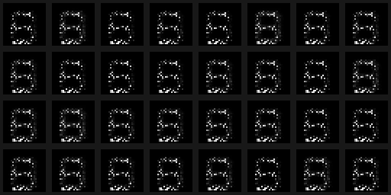
Say: Once training is over, keep the generator and feed it fresh noise.
The discriminator supplies a training signal, but it is not part of the sampling path. The short local image-GAN run is shown honestly alongside the published face example. The small run demonstrates the procedure; its image quality is not evidence of convergence.
Reveal 1. Training needs real examples and the discriminator.
Reveal 2. To sample after training, we only need noise and G.
Ask: Do we need real examples or D to generate a new image after training?
Answer: No. Sampling requires the trained generator and a new draw from its noise distribution.
Source: Goodfellow et al. · GANs
G / GAN
Deterministic toy geometry, centres (−2,0), (2,0); these are not image-quality metrics.
Say: Every point may look plausible while an entire cluster is missing.
Mode collapse separates sample quality from distribution coverage. A generator can concentrate on one valid region and ignore another. The toy controls let us compare that failure with a model that covers both clusters.
Reveal 1. Plausible samples can all come from one mode.
Reveal 2. Check whether samples are plausible and whether all modes are represented.
Ask: Could a realism score alone detect this missing cluster?
Answer: Not necessarily. We must also measure or inspect coverage.
Source: Goodfellow et al. · GANs
G / GAN
Same 256 latent draws. Readout losses use exactly these real/fake points; curves show training-batch history.
Say: Follow the same latent draws across checkpoints so movement reflects training.
The replay uses fixed noise at each recorded checkpoint. Compare the samples, mode coverage and losses together. The readout losses use the displayed points; the history curves use training batches, so they answer different monitoring questions.
Reveal 1. Keep the noise fixed while replaying the recorded training checkpoints.
Reveal 2. Read samples, coverage and losses together. D ≈ 1/2 is not proof of success.
Ask: Is a discriminator output near one half sufficient evidence of successful training?
Answer: No. It can also occur with a weak or failed discriminator; inspect the generated distribution too.
Source: Goodfellow et al. · GANs
G / GAN
Published pix2pix shoe example · conceptual conditioning paths
Say: An output can look like a shoe and still fail to match the outline.
A conditional generator receives both noise and a condition. The discriminator receives an example together with its condition. This lets its learning signal address compatibility, not just whether the example looks plausible on its own.
Reveal 1. Give the requested condition to the generator.
Reveal 2. D needs the condition too, so it can judge whether the output fits the request.
Ask: What problem remains if only G sees the condition?
Answer: An unconditional D cannot directly judge whether the generated output matches that condition.
Source: Goodfellow et al. · GANs
G / GAN
D.requires_grad_(False) opt_G.zero_grad(set_to_none=True) fake = G(torch.randn(B, 32)) fake_logits = D(fake) loss_G = BCE_logits(fake_logits, ones) # no detach; no no_grad around D loss_G.backward() opt_G.step() D.requires_grad_(True)
BCE_logits = binary_cross_entropy_with_logits · Complete runnable models
Say: Find the cut in the graph before changing the optimiser or the learning rate.
The lab contrasts a working update, a one-mode failure and a deliberately detached generator path. Check tensor shapes, gradient presence and parameter changes before interpreting losses. A decreasing discriminator loss alone cannot tell us whether G is learning.
Reveal 1. Find the detach boundary in D’s update and the open path in G’s update.
Reveal 2. In the lab, compare a working GAN, a missing mode and a cut generator gradient.
Ask: If fake is detached during the generator phase, can the generator optimiser repair the missing gradient?
Answer: No. The forward graph must connect the loss to G before an optimiser can update it from that loss.
Source: Goodfellow et al. · GANs
H / Comparison
Say: Compare what each model lets us calculate and how it produces one new sample.
Autoregressive models score sequences through conditional probabilities and sample sequentially. VAEs use latent likelihood models with approximate inference and an evidence bound. GANs learn a sampling map through an adversarial objective without providing a tractable image likelihood in this setup.
Reveal 1. Compare the learned distributions and the work needed to sample.
Reveal 2. The sampling path and access to likelihood depend on the model we choose.
Ask: Which model here provides an explicit product of conditionals for scoring an observation?
Answer: The autoregressive model. The VAE marginal typically needs approximation, and this GAN does not provide a tractable likelihood.
Source: ES 667 · original teaching diagrams and exact calculations
H / Comparison
1. What does the VAE encoder do?
2. Which two KLs appear?
3. What does “freeze D” mean?
It approximates a posterior after observing x.
Prior KL in the objective; true-posterior KL in the gap.
Hold parameters fixed; differentiate through the input.
Say: Explain the sampling path, the two KLs, and the gradient through frozen D in your own words.
Use these questions to check the mechanisms rather than just the model names. For a VAE, generation bypasses the encoder; the prior KL and posterior-gap KL have different roles. For a GAN, freezing D's parameters still allows its input derivative. The final question introduces learning from deliberate corruption in the next lecture.
Reveal 1. Explain prior sampling, the two KLs, and the gradient through frozen D.
Reveal 2. Next: can deliberately corrupting data give us targets for learning to generate?
Ask: What is the common task despite these different training recipes?
Answer: Learning a model that can produce varied, plausible draws from the target distribution, with any requested condition respected.
Source: ES 667 · original teaching diagrams and exact calculations
Optional appendix
For diagonal covariance, sum the coordinate contributions.
Say: Take the expectation term by term, using the mean and variance of q.
Write the log ratio of the Gaussian posterior and standard normal prior. Under q, the centred squared term has expectation sigma squared, while z squared has expectation mean squared plus variance. Substitution gives the one-coordinate KL used in the VAE loss.
Reveal 1. Write the Gaussian log-density ratio before taking its expectation.
Reveal 2. Use E[(z−μ)²] = σ² and E[z²] = μ² + σ².
Ask: Why can we add this result across latent coordinates?
Answer: The diagonal posterior and standard normal prior factor across coordinates, so their log-density ratio is a sum.
Source: Kingma & Welling · AEVB
Optional appendix
Say: Substitute Bayes' rule, then collect the terms that already form the ELBO.
The posterior denominator contributes log evidence, which is constant with respect to z. The remaining expectation is the negative ELBO. Rearranging gives the exact decomposition of evidence into bound and posterior gap.
Reveal 1. Bayes’ rule turns posterior KL into a difference of objectives.
Reveal 2. Rearrange, retaining the conditioning on x.
Ask: Which KL is the residual in this identity?
Answer: KL from the approximate posterior to the true posterior, both conditioned on the same observation.
Source: Kingma & Welling · AEVB
Optional appendix
JS uses M = (p_data + p_g)/2. Zero-density regions do not constrain D*.
Say: This result assumes an ideal discriminator. A finite training run need not reach it.
Optimise D pointwise with G fixed wherever the two densities sum to a positive value. Substituting that ideal discriminator into the minimax value gives a Jensen-Shannon divergence plus a constant. This explains the ideal target, not a convergence guarantee for alternating neural-network updates.
Reveal 1. Assume densities under a common measure and optimise D pointwise where their sum is positive.
Reveal 2. For the minimax value at D*, distribution matching minimises JS. This is idealised analysis.
Ask: Does the ideal discriminator formula prove that our practical GAN training will converge?
Answer: No. It assumes an optimum that finite networks and alternating optimisation may not reach.
Source: Goodfellow et al. · GANs